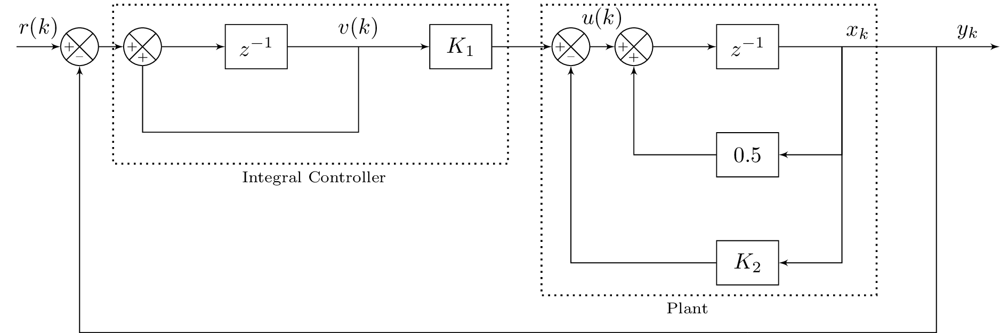

\documentclass[%
% border=1pt
border={-25pt 0pt 0pt 0pt} % left bottom right top
]{standalone}
\usepackage{tikz}
\usepackage{amsmath}
\usetikzlibrary{positioning}
\usetikzlibrary{shapes,arrows,calc}
\usetikzlibrary{decorations.text}
\usetikzlibrary{decorations.pathreplacing}
\tikzset{add/.style n args={4}{
minimum width=6mm,
path picture={
\draw[black]
(path picture bounding box.south east) -- (path picture bounding box.north west)
(path picture bounding box.south west) -- (path picture bounding box.north east);
\node at ($(path picture bounding box.south)+(0,0.13)$) {\tiny #1};
\node at ($(path picture bounding box.west)+(0.13,0)$) {\tiny #2};
\node at ($(path picture bounding box.north)+(0,-0.13)$) {\tiny #3};
\node at ($(path picture bounding box.east)+(-0.13,0)$) {\tiny #4};
}
}
}
\begin{document}
%\begin{figure}
%\centering
%\tikzstyle{block} = [draw, fill=blue!20, rectangle, minimum height=3em, minimum width=4em]
\tikzstyle{block} = [draw, rectangle, minimum height=2em, minimum width=0.5em]
\tikzstyle{controller} = [draw, fill=red!20, rectangle, minimum height=2em, minimum width=1em]
\tikzstyle{sum} = [draw, fill=blue!20, circle, node distance=1cm]
\tikzstyle{input} = [coordinate]
\tikzstyle{output} = [coordinate]
\tikzstyle{sampleSP} = [coordinate]
\tikzstyle{sampleEP} = [coordinate]
\tikzstyle{otherPoint} = [coordinate]
\tikzset{
position label/.style={
below = 3pt,
text height = 1.5ex,
text depth = 1ex
},
brace/.style={
decoration={brace, mirror},
decorate
}
}
\begin{tikzpicture}[auto, >=latex']
%% Integral Controller
% Nodes and Blocks
\node [input] (input) {};
%\node [sum, right = 1cm of input] (sum) {};
\node[draw,circle,add={--}{+}{}{},right of= input](sum){};
\node[draw,circle,add={+}{+}{}{},right of= sum](sumint){};
\node [block, right = 1cm of sumint,text width=0.75cm,align=center] (delay1) {$z^{-1}$};
% feedback points
\node [otherPoint,right = 1.125 cm of delay1] (vkbelow) {}; %{$\frac{1}{Ts+1}$};
\node [otherPoint, below = 1cm of delay1] (m1) {};
% Gain Blocks
\node [block, right = 2.25cm of delay1,text width=0.75cm,align=center] (gainK1) {$K_1$};
% Declarations for integral controller
\draw[thick,dotted] ($(sumint.north west)+(-0.25,0.45)$) rectangle ($(gainK1.south east)+(0.25,-1.5)$);
\node [below right=1.5cm and -0.85cm of delay1] {\scriptsize{Integral Controller}}; (text1)
%\draw [brace,decoration={raise=2ex}] (sumint.south west) -- node [position label,yshift=-3ex] {$G(s)$} (gainK1.south east);
%% Plant
\node [otherPoint, right = 0.25cm of gainK1] (sumP1Space) {};
% Summers
\node [draw,circle,add={--}{+}{}{}, right of= sumP1Space] (sumP1) {};
\node [draw,circle,add={+}{+}{}{}, right of= sumP1] (sumP2) {};
% Blocks
\node [block, right = 1cm of sumP2,text width=0.75cm,align=center] (delay2) {$z^{-1}$};
\node [block, below = 1cm of delay2,text width=0.75cm,align=center] (constant05) {$0.5$};
\node [block, below = 1cm of constant05,text width=0.75cm,align=center] (gainK2) {$K_2$};
%Output Points
\node [otherPoint, right = 1cm of delay2] (xk) {};
\node [otherPoint, right = 1.5cm of xk] (yk) {};
\node [output, right of = yk] (output) {};%{$y(k)$};
\node [output, below = 0.75cm of gainK2] (m2) {};
% Declarations for plant controller
\draw[thick,dotted] ($(sumP1.north west)+(-0.25,0.45)$) rectangle ($(xk.south east)+(0.55,-3.95)$);
\node [below left=0.15cm and 0.001cm of gainK2] {\scriptsize{Plant}}; (text2)
% Arrows for Integral Controller
\draw [draw,->] (input) -- node {$r(k)$} (sum);
\draw [draw,->] (sum) -- node {} (sumint);
\draw [draw,->] (delay1) -- node {$v(k)$} (gainK1);
\draw [draw,->] (sumint) -- node {} (delay1);
% Feedback for integral controller
\draw [-] (vkbelow) |- (m1) {} ;
\draw [-] (m1) -| (sumint) {} ;
% Arrows for Plant
\draw [draw,->] (gainK1) -- node {} (sumP1);
\draw [draw,->] (sumP1) -- node[above=0.15] {$u(k)$} (sumP2);
\draw [draw,->] (sumP2) -- node {} (delay2);
%Feedback to Summers in Plant
\draw [->] (constant05) -| (sumP2) {} ;
\draw [->] (gainK2) -| (sumP1) {} ;
% Feedback for plant and finishing up connections
\draw [->] (xk) |- (constant05) {} ;
\draw [->] (xk) |- (gainK2) {} ;
\draw [draw,-] (delay2) -- node {$x_k$} (yk);
\draw [draw,->] (yk) -- node {$y_k$} (output);
\draw [-] (yk) |- (m2) {} ;
\draw [->] (m2) -| (sum) {} ;
\end{tikzpicture}
%\end{figure}
\end{document}Created by David Li